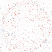

scVision renders each cell as a continuous image and learns one frozen representation by masked-image modelling — the most accurate zero-shot annotator on every held-out human atlas we tested.
1Electrical Engineering · 2Radiation Oncology · 3Biomedical Data Science · 4Computer Science · 5Medicine (Oncology) · 6Institute for Computational & Mathematical Engineering · 7Psychiatry & Behavioral Sciences — Stanford University ✉ Correspondence: tauhid@stanford.edu · eadeli@stanford.edu
Most single-cell foundation models borrow the design of language models, treating a cell as a sequence of gene tokens. That discards the relationships among genes and often the magnitude of their expression — and no amount of extra scale can put that structure back.
scVision changes the representation itself. Using optimal transport, it lays roughly eleven thousand informative genes at fixed positions on a single, shared, pan-tissue map, arranged so that genes which tend to act together become spatial neighbours. Projecting any cell's measured expression onto this common map turns its transcriptome into an image, where coordinated gene programs appear as local texture and overall cellular identity as global pattern. Because the layout is shared across every cell and tissue, a cell is always the same fixed-size image — no matter how many genes were measured. This recasts single-cell representation learning as a computer-vision problem, so that mature image models can be brought to biology through a change in how a cell is represented.
Optimal transport places the 10,816 most informative genes at fixed coordinates on a single 104×104 lattice, shared across all cells. Painting a cell's expression onto it renders the transcriptome as a continuous scImage.
A ViT-base encoder (~86M parameters) is trained as a masked autoencoder on 72 million of ~94 million human cells — reconstructing 75% hidden image patches, with no cell-type labels.
The encoder is used exactly as trained — frozen, no fine-tuning — to annotate cell types, integrate studies, read gene programs from attention, probe perturbations and trace disease axes on held-out data.
Pick a real held-out cell to see its transcriptome rendered onto the shared gene lattice as an scImage, then hide patches of it and watch what the frozen encoder still reads from what is left — the real model, running live on the cell in front of you.
Real scImages, rendered from held-out cells by the same optimal-transport gene cartography used in pretraining — every cell painted onto one shared lattice. Masking hides patches of the real input; the frozen encoder then re-reads the cell.
The frozen embedding is the most accurate zero-shot annotator on all six held-out human atlases — kidney, ovary, retina, focal cortical dysplasia, Crohn's-disease ileum and a 53-type multi-organ reference — ahead of scGPT, scFoundation, Geneformer and strong classical baselines.
A single labelled cell per type reaches an accuracy that the best classical method needs roughly fifty labels to match — more than a fifty-fold reduction in the annotation effort that adopting a new dataset usually demands.
Without ever being shown a batch label, scVision matches scVI and scGPT on the combined scIB score while conserving more biological structure than any method tested.
The spatial layout degrades gracefully. With 70% of input genes randomly removed, scVision retains most of its balanced accuracy, while the classical HVG-kNN baseline collapses toward chance.
Attention maps read directly as gene programs that recur across organs with no pathway supervision, and spatial masking perturbs a whole neighbourhood of co-regulated genes as a single unit.
Permuting the gene-to-position layout — holding the network and data fixed — lowers accuracy several times more than removing the vision transformer entirely. The biologically meaningful arrangement of genes, not the network, carries the signal.
Every value here is read straight from the paper's evaluation files. Switch views to compare scVision with token foundation models and classical baselines.
Without ever seeing a batch label, scVision embeds cells from dozens of independent studies into a single space where cell types cluster and studies intermingle. Colour by cell type to see the biology; colour by study to watch the batches mix.
2D PCA of scVision's frozen embedding — venous blood, 82 independent studies, 8 major immune cell types. The full scIB integration scores are in the Benchmarks tab.
These are actual scImages rendered from held-out cells. Every cell shares the same gene layout, so all scImages look broadly similar — the finer differences in local texture are what distinguish cell types, and what scVision learns to read. Select any cell and hide part of it, then run the real scVision model on it live — see its annotation, nearest cells, and gene-program attention hold, or break, as you mask more of the cell.
Loading real scImages…
Upload a cell's raw counts and watch scVision render it into an scImage on the shared gene lattice, then annotate it against a real reference atlas — the exact frozen encoder from the paper, running live. Your genes are matched to the model's 10,816 by symbol or Ensembl ID; the file is processed in memory for this one request and never stored.
.h5ad · up to 25 cellsgene,count CD3D,42 MS4A1,7 LYZ,0 …
Rows are genes (HGNC symbol or Ensembl ID); one column per cell holds raw integer UMI counts. For .h5ad: cells×genes with counts in X or layers['counts'], and cell_type in obs if you have it.
The scImage render is verified to reproduce scVision's pretraining genomaps exactly (Pearson r = 1.00). Annotation is a cosine k-nearest-neighbour vote over a reference atlas of ~7,000 real annotated cells spanning 110 cell types, in the frozen 768-dimensional space — the same probe used in the paper. Undetected genes are treated as zero, exactly as in pretraining. Your cell is never in the reference.
From scVision's frozen embedding of dilated-cardiomyopathy hearts, a single linear disease axis separates diseased from healthy cells — and it transfers to a different disease it never saw, hypertrophic cardiomyopathy, scoring diseased cells higher than healthy ones better than raw expression does. No disease labels were used to train the encoder.

The axis is a single linear direction in the frozen 768-dimensional space. In-domain (dilated cardiomyopathy) detection reaches AUROC 0.95; transferred to a different cardiomyopathy it stays above chance (0.60) and ahead of raw expression (0.48).
Single-cell transcriptomics has made it possible to measure gene expression in tens of millions of individual cells, revealing cellular diversity that bulk profiling cannot resolve. Foundation models aim to learn general representations from these large datasets that can be reused across many biological tasks. However, most current single-cell foundation models are adapted from language models and represent each cell as a set or sequence of gene tokens. This design has two limitations. It treats genes as largely unordered inputs, even though genes act together in coordinated programs, and it often requires expression values to be discretized or ranked, losing quantitative information about expression magnitude.
Here we present scVision, a vision foundation model for single-cell biology. Instead of converting genes into tokens, scVision represents each cell as a continuous gene-expression image. It assigns genes to fixed spatial positions using optimal transport, so that genes with related expression patterns are placed near one another and coordinated gene programs form local image regions. The resulting image preserves both the quantitative expression level of each gene and the biological relationships among genes. We pretrain a vision transformer with masked image modelling on 72 million human cells, creating one of the largest pretrained models for single-cell analysis.
In zero-shot evaluations across six independent, held-out studies, frozen scVision representations outperform existing foundation models and classical baselines in cell-type annotation and gene-program discovery, without task-specific retraining. On multi-study integration, scVision matches the strongest token-based foundation model on the combined benchmark score and conserves more biological structure than any method tested. The spatial organization of scVision also improves interpretability: image regions correspond to groups of co-expressed genes, and attention maps can be read as gene-program activity. This structure also enables spatial masking experiments, in which a neighborhood of related genes is perturbed as a single unit, an operation with no direct counterpart in token-based foundation models. By preserving continuous gene-expression values and giving genes biologically meaningful positions, scVision reframes single-cell representation learning as a vision problem. This approach retains more of the original transcriptomic signal while opening a direct path for applying modern computer vision methods to single-cell biology.
@article{yesiloglu2026scvision, title = {A vision foundation model for single-cell biology via spatial gene cartography}, author = {Yesiloglu, Ridvan and Mostafa, Sakib and Zou, James and Alizadeh, Ash and Wu, Jiajun and Xing, Lei and Adeli, Ehsan and Islam, Md Tauhidul}, year = {2026}, note = {Preprint}, url = {https://islamlab.org/scvision} }
This citation will be updated with the arXiv identifier or journal reference once available.